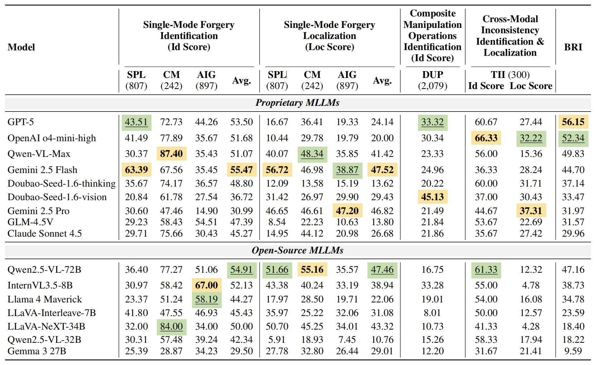
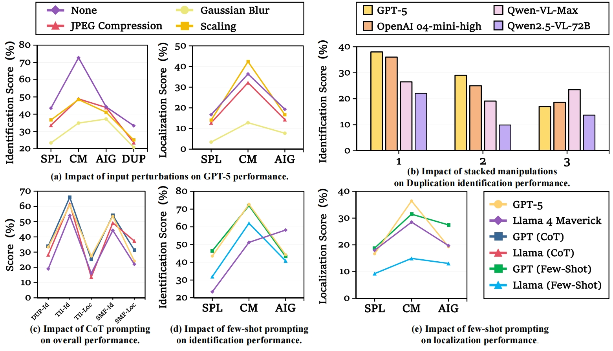
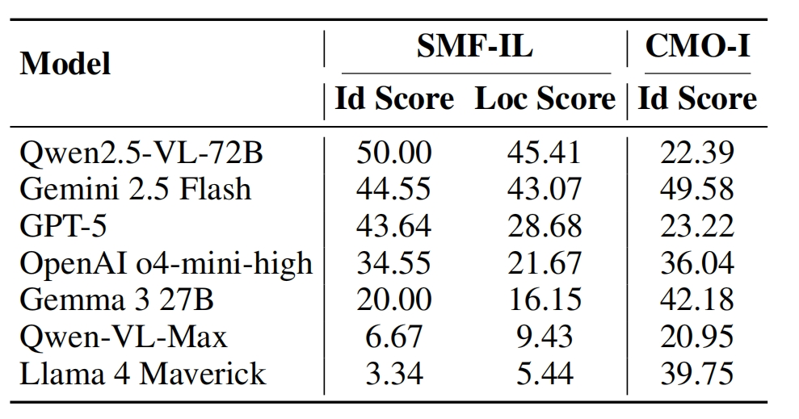
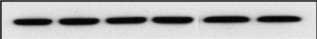
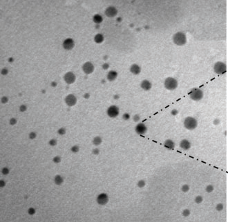
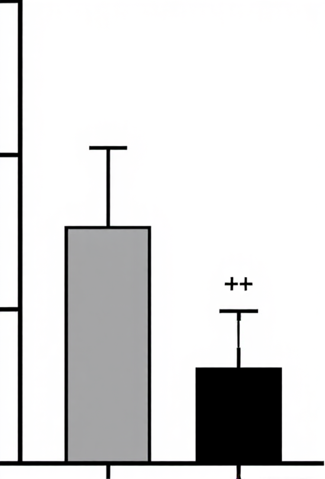
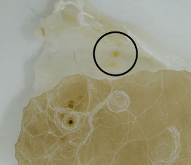
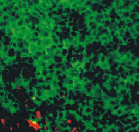
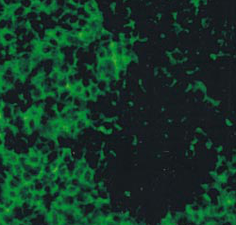
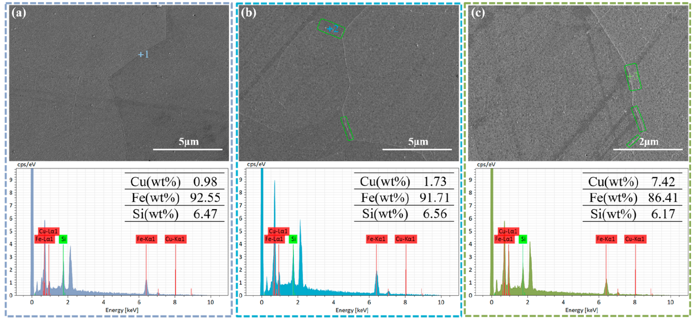

THEMIS
Towards Holistic Evaluation of MLLMs
for Scientific Paper Fraud Forensics
Towards Holistic Evaluation of MLLMs
for Scientific Paper Fraud Forensics





Dataset construction pipeline of THEMIS. The dataset is built through 2 stages: Stage 1: Extraction and Parsing, where figures, captions, and related sentences are parsed from scientific PDFs and segmented into panels; Stage 2: Fraud Data Generation, where 5 major fraud types (Splicing, Copy-Move, AI-Generated, Duplication, and Text–Image Inconsistency) are applied to construct challenging tasks.

Evaluation task design of THEMIS. A principled mapping from 5 fraud types to 5 core reasoning capabilities (Expert Knowledge Utilization, Visual Recognition, Spatial Reasoning, Region Localization, and Comparative Reasoning). The capability distribution bars on the right of each box illustrate the reasoning skills involved and their relative emphasis, with the darkest color highlighting the primary capability being evaluated.

Statistics of THEMIS. (a) Distribution of fraud methods. (b) Distribution of manipulation operations (synthetic data). See Table 5 for real cases. IIF: Image Inference Forgery; TRE: Targeted Region Editing; CT: Color Temperature; DR: Direct Reuse; HF: Horizontal Flip; VF: Vertical Flip.
A) Click the buttons to identify the forgery type.






C) Are the text and image consistent?

Figure Caption:
EDS analysis at the grain boundaries of Fe-6.5 wt % Si steel strip samples: (a) 1.0 wt % Cu, (b) 1.5 wt % Cu, and (c) 2.0 wt % Cu.
Related Sentences:
Further SEM microstructural examination revealed that Cu rich precipitates were absent in the 1.5 wt % Cu specimen (Figure 8a), but became visible in the 1.5 wt % Cu specimen (Figure 8b). The precipitates in the 1.5 wt % Cu specimen were tiny, few, and irregularly scattered at grain boundaries. Cu-rich precipitates were continuous or semicontinuous at grain boundaries as the Cu dosage was raised to 2.0 wt %, as shown in Figure 8c.